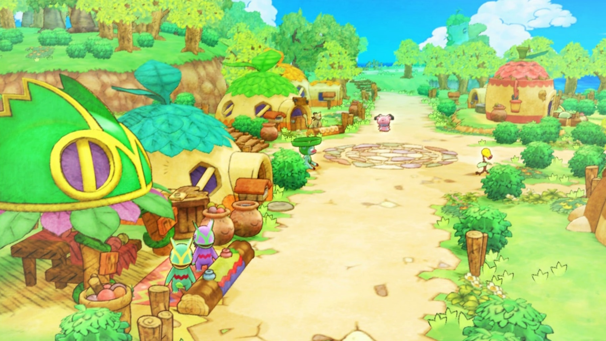
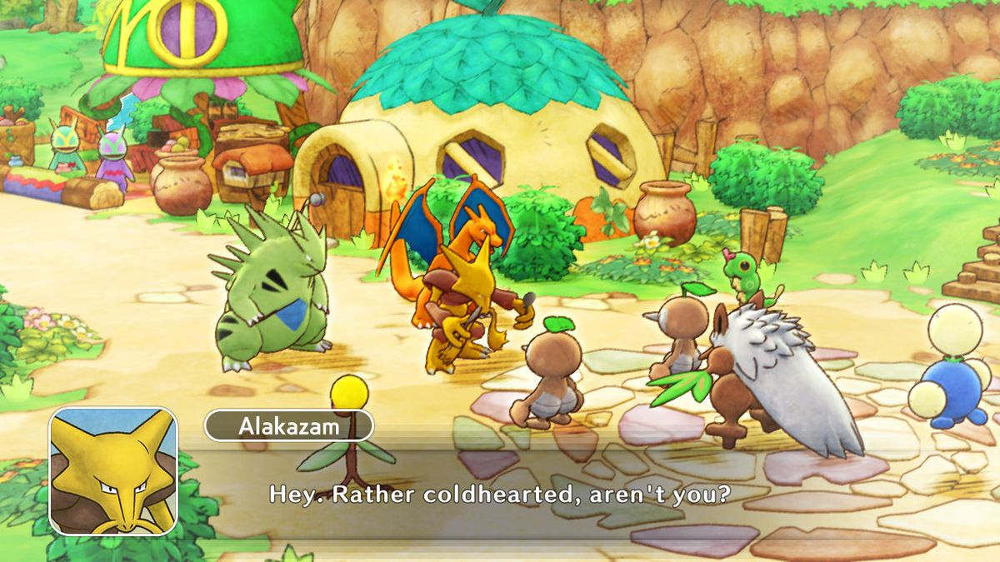
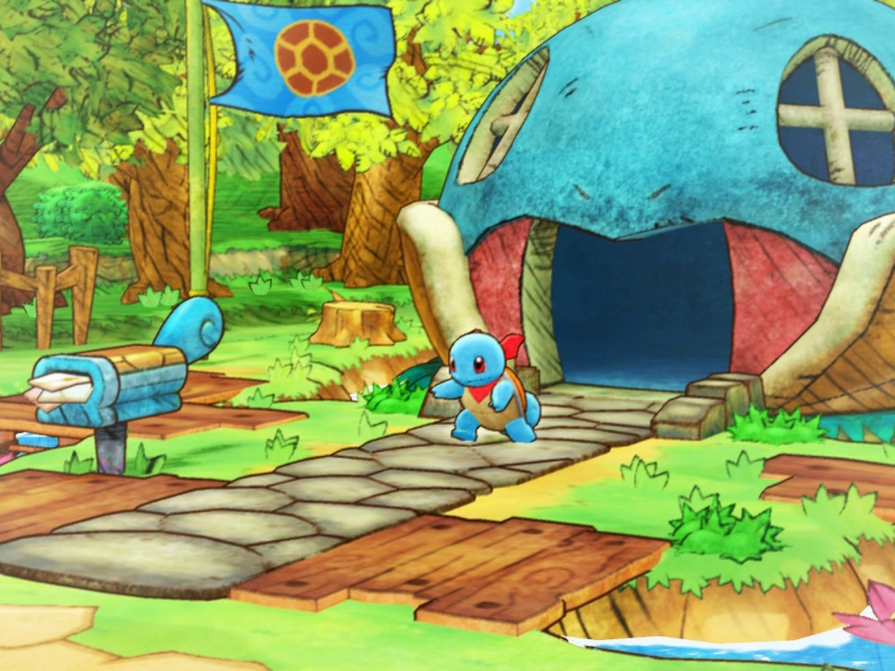
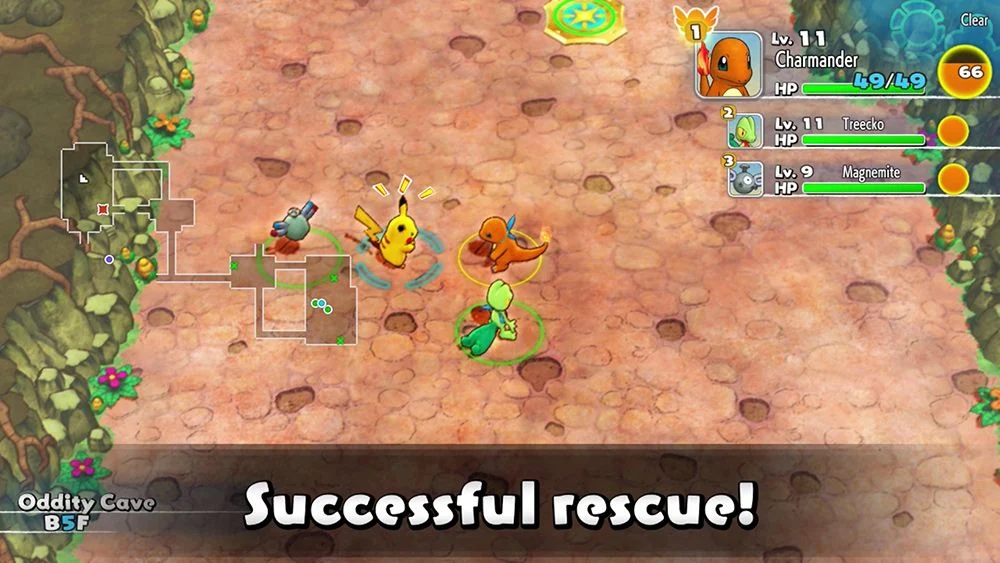

In the human world, there was once a wicked trainer who tried to grab one of Ninetales' tails. The Pokédex entries for Ninetales in various Pokémon games have referred to a curse that will afflict someone for one thousand years if they grab one of its tails. This fate would have befallen this trainer, had his loyal Gardevoir not absorbed the curse in their place. The human then abandoned their Gardevoir, leaving it to wander in the spirit world. You play as a human that turned into a pokemon, and you have the discover the secrets in this world via levels known as mystery dungeons.
Gameinformation
genre
rogue-like
gamesoort
singleplayer
rating
69
uitgever
nintendo
uitgavedatum
6 maart 2022
Images




Systeemvereisten
Besturingsysteem: Nintendo Switch system software
Processor: Nvidia Tegra X1
Geheugen: 4 GB RAM
Grafische kaart: Nvidia GTX 1650
Direct X:-
Opslagruimte: 2,2 GB beschikbare ruimte
Reviews
Digitally...
Pokémon Mystery Dungeon: Rescue Team DX will be one of Nintendo's most niche titles of 2020. With that being said, I fall squarely into the Venn diagram that makes the target demographic for this game, so I loved every second of it. As a fan of Pokémon, Mystery Dungeon roguelikes, and whimsical, light-hearted, and wholesome art styles, Rescue Team DX clicked with me on every level.
RPG Site
Pokemon Mystery Dungeon: Rescue Team DX is going to end up surprising a lot of people. Once you get past the initial few hours, it becomes clear why the series has sustained such a fan-base over a long period of time. Although it has its share of annoying faults, the entertaining story, the huge amount of content to complete, and the fun, simplistic gameplay makes it a great choice for Pokemon fans and dungeon-crawler fans alike.
Nintendo insider
It may see us return to an adventure that many will have first set out on nearly 15 years ago, but Pokémon Mystery Dungeon: Rescue Team DX is yet another remake with the right approach. Modernised for a new generation and a worthwhile upgrade for those setting up their Rescue Team Base for a second time, it offers an enjoyable team-bonding adventure for those looking for a different pocket monster experience on the plucky portable home console.